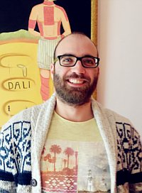

- Εκπαίδευση
-
Εθνικό και Καποδιστριακό Πανεπιστήμιο Αθηνών
Προγράμματα Συμπληρωματικής εξ αποστάσεως Εκπαίδευσης
Τμήμα: Digital Marketing
Τμήμα: Μίγμα Marketing και Branding
-
Τεχνολογικό Εκπαιδευτικό Ίδρυμα Χαλκίδας
Τμήμα: Αυτοματισμού
-
Southern University of Denmark
Mέσω του Ευρωπαϊκού προγράμματος Erasmus Mundus
Τμήμα: Artificial intelligence
- Επαγγελματική Εμπειρία
-
Soundstar(Απρίλιος 2016 - τώρα)
Website administrator - Internet marketing
- Υπεύθυνος για τη διαχείριση του e-shop
- Ολοκλήρωση σχεδιασμού και απαιτήσεων νέου website
- Μετάβαση από παλιό website σε καινούργιο
- Προσαρμογή νέου website στις μεταβαλλόμενες ανάγκες της επιχείρησης
- Email marketing
- Διαχείριση social media
Adminia(2013 - 2015)
Τεχνικό τμήμα με αρμοδιότητες:
- Web development στα CMS: Opencart, Joomla, Wordpress, Drupal
- Επισκευή ηλεκτρονικών υπολογιστών
- Εξυπηρέτηση πελατών
- Υποστήριξη θέσεων εργασίας
- Απομακρυσμένη υποστήριξη
Εργασία στο χώρο της εστίασης (café – bar - restaurant) (2003 - 2013)
Ελληνική Αεροπορική Βιομηχανία Α.Ε. (2010)
Πρακτική άσκηση στον τομέα ηλεκτρονικών κατασκευών στα τμήματα:
- Συνεργείο Αυτόματης Συναρμολόγησης
Χειρισμός και προγραμματισμός των μηχανών αυτόματης συναρμολόγησης S.M.D. υλικών
- Δικτύων Δορυφορικών και Διαστημικών Εφαρμογών
Σχεδιασμός και εγκατάσταση ασύρματων δικτύων
- Άλλες Γνώσεις
-
Computer skills
- HTML
- CSS
- PHP
- Javascript
- Opencart
- Joomla
- Drupal
- Wordpress
- Vtiger CRM
- Inkscape
- Gimp
- Windows
- Mac
- Linux
Ξένες Γλώσσες
Άριστη προφορική και καλή γραπτή γνώση και χρήση αγγλικών με πτυχίο Lower First Certificate in English, University of Cambridge
Άλλα προσόντα
- Εκπληρωμένες στρατιωτικές υποχρεώσεις
- Δίπλωμα οδήγησης αυτοκινήτου β' κατηγορίας και ΙΧ αυτοκίνητο